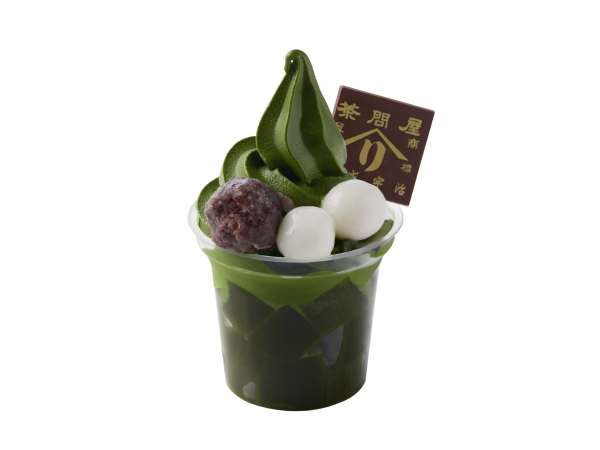
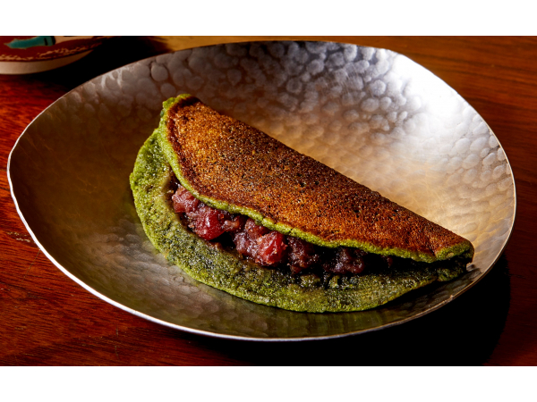
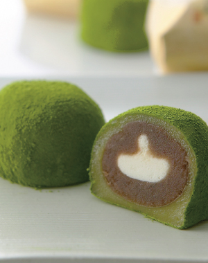
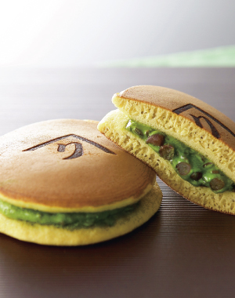
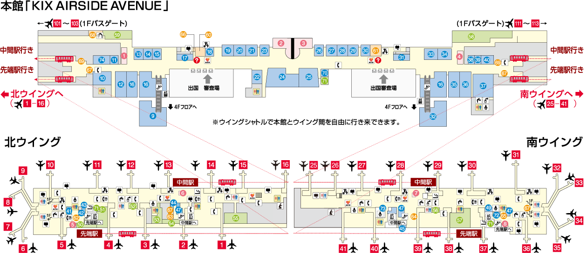

新着情報
-
2019/0701ホームページがオープンしました。
-
2019/0701ホームページがオープンしました。
メニュー

お濃茶パフェ
宇治抹茶の「薫り」と「旨み」を閉じ込めた抹茶ゼリー、 宇治抹茶をふんだんに使用した濃厚な抹茶ソフトクリーム、もちもち食感の白玉、北海道小豆を使用した上品な甘さの餡子など、さまざまな食感と味わいを一度に楽しめる贅沢なパフェです。
プレミアム抹茶生ソフト
宇治抹茶をふんだんに使用した濃厚な抹茶ソフトクリームにもちもちの白玉と北海道小豆を使用した上品な甘さの餡子をトッピング。当店おすすめの抹茶ソフトクリームです。
お濃茶セット
辻利兵衛本店がお届けする宇治抹茶は、上質な茶葉の新芽を昔ながらの石臼で挽くため、薫り高く上品でまろやかな味わいが特徴です。ふわっとした茶葉のやわらかい旨みを堪能してください。

茶福餅
宇治抹茶を贅沢に使用し、さらにてん茶を練り込んだ生地でやさしく包みました。 もっちもちの食感と抹茶の上品なコクと薫りの後に小豆餡の程よい甘みが広がります。

宇治有機抹茶入大福
口当たりなめらかなクリームと北海道産小豆の生餡から炊いた黒糖餡をやわらかい羽二重もちで包み込み、挽きたての有機抹茶をふんだんにまぶした上品で大変贅沢な抹茶大福です。風雅な香りただよう本格派を、ぜひともご賞味ください。

宇治抹茶生どら焼き 童仙房
宇治の石臼挽き抹茶を贅沢に練り込んだクリームを職人が一枚一枚丹念に焼き上げた生地ではさみました。最後に屋号を焼きいれました。
辻利兵衛本店 関西空港 BLUE SKY 店
関西国際空港第１ターミナルビル ３F
国際線ゲートエリア内
7:00〜24:00


ページトップへ